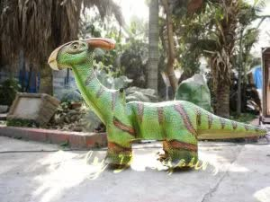
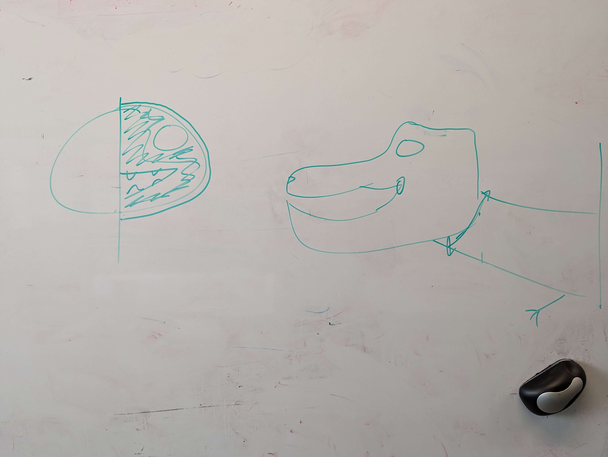

Many museum and public displays of dinosaurs are either real skeletal recreations based on recovered fossils found in
stone, with casts being made from them or public attraction pieces that are made of hard plastic required by their kid
friendly and outdoor placement (Tyrannosaurus rex, OnlyDinosaurs)

An outdoor dinosaur model made of hard plastic.
This model prototype provides a
different perspective of a T-Rex skull intending to combine both the skeletal structure and a skin imitation of a real
T-Rex. With this model intending to be a hands off, display model various child-friendly concerns wont have to be the
top priority during the design and development phases.
Model Aims
This model needed to be visually appealing, with a good blend of a realistic representation of a T-Rex skull’s bone
structure combined with an outer skin design that represents the creature’s flesh. In addition, the lower jaw should
move allowing for it to be opened and closed on a bearing joint inside the skull, this joint needed to be a fluid motion
that’s strong enough to hold the jaws weight. This model should also be safe and durable enough to be in an enclosed
display environment for extended periods of time, while also being able to survive accidental contact. Notably this
model is designed for indoor artificially lit rooms.

First concept of the model, showing half the face convered in ski with th other half showing bone.
Design Constraints
The model needed to be lightweight and easy to handle in order for easy relocation inside a display environment, as well
as aiding in reduced jaw bearing complexity as a light jaw subjects the bearing to less force.
The material costs had to be considered as this model was developed under a budget.
Design fabrication time and environmental effects were also considerations that had to be taken into account, as this
model aims to be as least environmentally damaging as possible. Material choice prioritized biodegradability and minimal
harmful fumes during production, leading to the selection of PLA filament (Boissonneault, 2023; Bluhm, 2022).
References
• Tyrannosaurus rex National Museums Scotland. Available at: https://www.nms.ac.uk/explore-our-collections/stories/natural-sciences/tyrannosaurus-rex/
• OnlyDinosaurs (no date) Realistic animatronic dinosaurs for sale, Only Dinosaurs. Available at: https://onlydinosaurs.com/animatronic-dinosaurs/
• Boissonneault, T. (2023) Pla vs ABS: Which filament should one use?, Wevolver. Available at: https://www.wevolver.com/article/pla-vs-abs
• Bluhm, M. (2022) Ultimate Guide to sustainable 3D printing materials: Pathing the way for a circular economy, Replique. Available at: https://replique.io/2022/04/26/guide-to-sustainable-3d-printing-materials/#part41